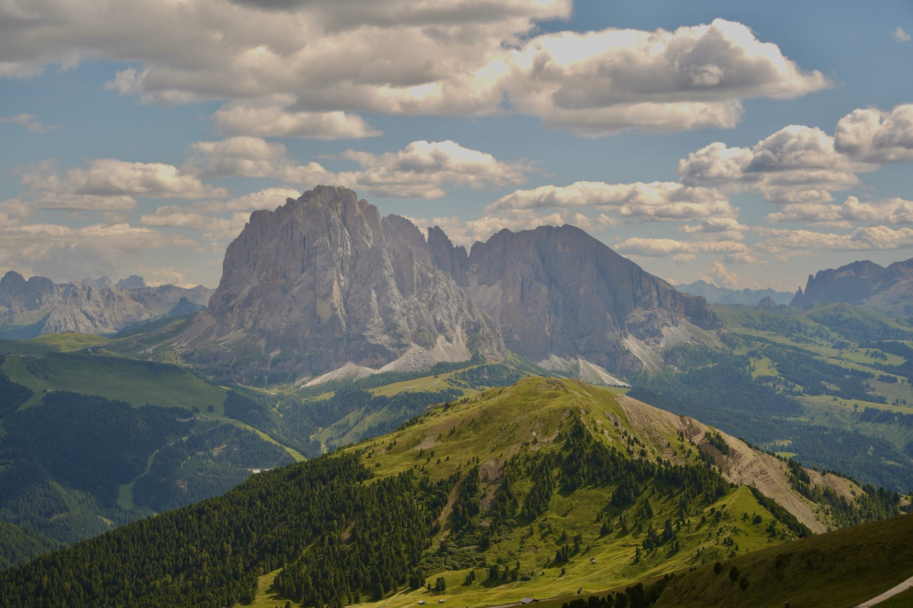

Перший екран сайту —
варіанти
Кожна сторінка — живий прототип: інтро програється автоматично і приводить на головний екран. Відкрийте з комп’ютера і з телефона.

ВАРІАНТ 1Крізь букву A
Нарізка з турів грає всередині логотипу, камера пролітає крізь букву у відео.

ВАРІАНТ 2Трикутники і каньйон
Фото складаються в гору, розсипаються разом із синім екраном — і відкривається відео з каньйоном.
Ще три варіанти на вибір

ВАРІАНТ AЩоденник експедиції
Гори малюються лінією на папері, папір розривається — під ним відео і полароїди з поїздок.

ВАРІАНТ BТиха розкіш
Спокійний океан на весь екран із логотипом, потім відео стає м’яким вікном під великою назвою.

ВАРІАНТ DГлибина
З туману проступає назва, а вершина Доломітів піднімається перед нею.
Щоб подивитися інтро ще раз — кнопка «Інтро ще раз» внизу сторінки (на телефоні — просто оновіть сторінку).